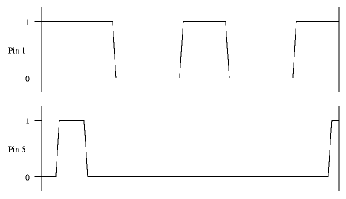

This page provides a little more detailed information about the actual
wire protocol used by the Maple Bus to get the packets from point A to
point B. It is not necessary to read it unless you are going to
construct your own DC peripherals.
This page provides a little more detailed information about the actual
wire protocol used by the Maple Bus to get the packets from point A to
point B. It is not necessary to read it unless you are going to
construct your own DC peripherals.
The Maple Bus transfers the data serially. The serial protocol is of the synchronous variant, where each bit is explicitly clocked. In contrast to standard synchronous protocols, which use one wire for data and one for clock, the Maple Bus uses a scheme in which the two wires take turn in representing data and clock. Due to this scheme, the bandwidth for each signal is just 1MHz, although the data transfer rate is 2Mbps. Pretty neat, eh? :-)
Since the wires take turn in being data and clock, transfer is effectively
done in two alternating phases. In phase 1, pin 1 is clock and pin 5 is data.
In phase 2, pin 5 is clock and pin 1 is data. In each phase, which lasts
for 0.5µs, a single bit of data is transferred. The diagram below shows
how the phases follow each other:
At the beginning of phase 1, pin 1 is always high (+5V), and pin 5 is
always low (0V). Pin 5 will then take the value of the data bit to transfer
(i.e. go high if the bit is a 1, and remain low if it is a 0). When the
data has stabilized on pin 5, pin 1 is driven low. This signals the
receiver that there is now a valid bit to receive. The data must now remain
stable on pin 5 for at least ¼µs. Pin 5 will then go high (if it haven't
already done so), and phase 1 is completed. Phase 2 will then follow
in exactly the same fashion as phase 1, but with the meaning of pin 1 and
pin 5 exchanged. (Note that pin 1 will always be low and pin 5 always high
at the beginning of phase 2, just as pin 1 is always high and pin 5 always
low at the beginning of phase 1.) When phase 2 has been completed, two bits
of data have been transferred. If more data remains to be sent, phase 1
will begin again.
It can be noted at this point that a receiving circuit need not consern
itself with phases at all; a negative flank on any of the pins will
always mean a valid bit on the other pin.
Bits are always transferred is groups of at least eight (meaning four cycles of phase 1 + phase 2). In a group of eight bits, the first bit sent is the most signigicant one. (This is the opposite bit order of RS232.) However, the only single 8-bit group sent is the hardware checksum sent at the end of a packet. The packet data itself always consists of 4-byte groups. Here, things get a little more complicated. As before, each byte is sent as 8 bits, MSB first. But the order of the four bytes is reversed, so the byte sent first is actually the last of the four bytes. At a first glance, this might be seen as an indication that the true byteorder of the bus is little endian, and not big endian as I have stated. Things are not quite so simple though. The byte order reversal does not affect just 32-bit numeric quantities, but also byte array data such as blocks read from memory cards. The byte swapping should thus be seen as intrinsic to the bus, and not an endianness mismatch. The Maple DMA hardware in the Dreamcast performs the swapping automatcially.
Before any data can be transmitted on the bus, a sync sequence must first be transmitted. This serves the dual purpose of putting all listening devices in attention, and setting the right signal levels for phase 1. When the bus is idle, both wires contain a high signal. The sync sequence begins with pulling pin 1 low. Pin 5 is then repeatedly pulled low and then high again (4 times). Finally, pin 1 is returned to high, and pin 5 is yet again pulled low. This gives the right levels (1 high and 5 low) for the first phase 1, which follows immediately after the sync sequence. This is what a sync sequence can look like:
The exact timing varies with different implementations, which is why it is not present in the diagram. A conservative implementation should probably make the cycles of pin 5 about as long as a normal phase (0.5µs) although both shorter and longer cycles seem common. Interpreted as normal data transfer cycles, the sync appears as the bit sequence 100001, but with all bits but the first sent in phase 2. A receiving device should identify four consecutive down flanks on pin 5 as a signal that a new frame will begin with the next phase 1 cycle. (This gives a bit more time to set up than if you wait for the fifth down flank.)
As mentioned earlier, the transfer of a frame contains an 8-bit checksum.
This checksum is just a bytewise XOR of all the bytes of the packet sent.
This checksum is sent immediately after the frame data. After the checksum.
the following sequence is sent to terminate the communication and return
the bus to its idle state:

The corresponds to the bit sequence 100, sent with phase 2, 1 and 1. (Note
that the first bit is phase 2, although a read data bit would have been phase 1
here.) Two consequent phase 1 cycles can be used to detect an end of
transmission.
Last modified: Wed Sep 20 22:04:43 MEST 2000